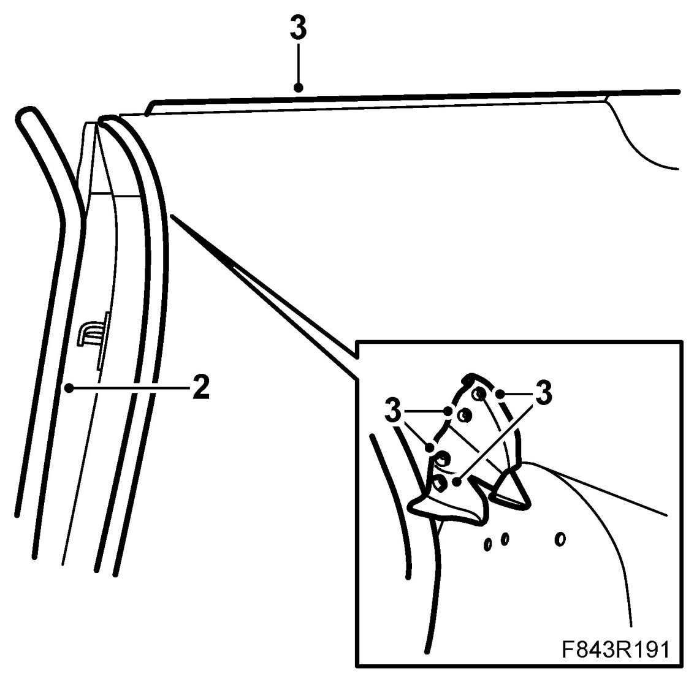
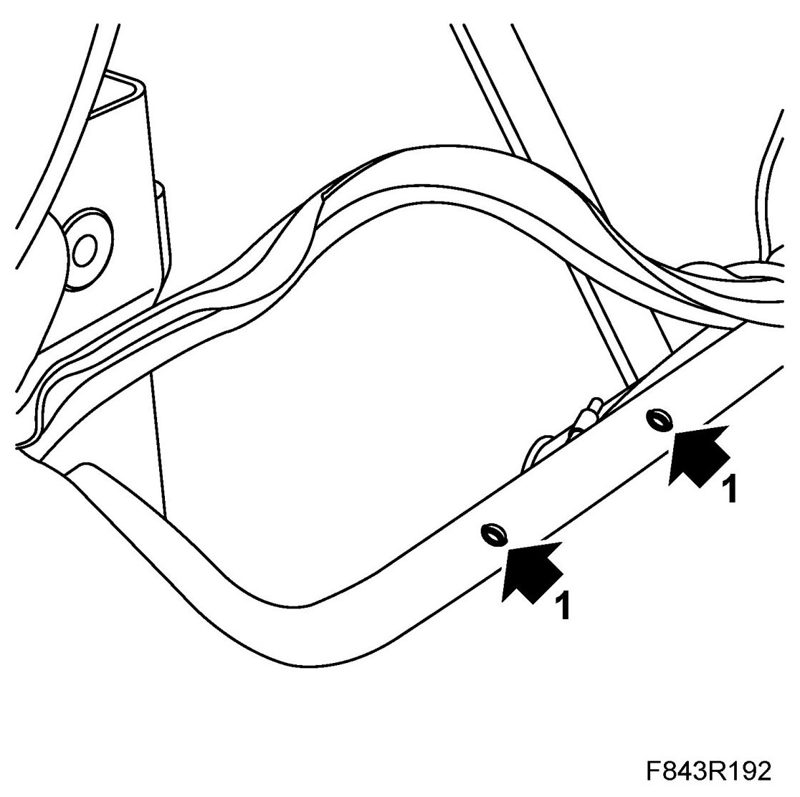
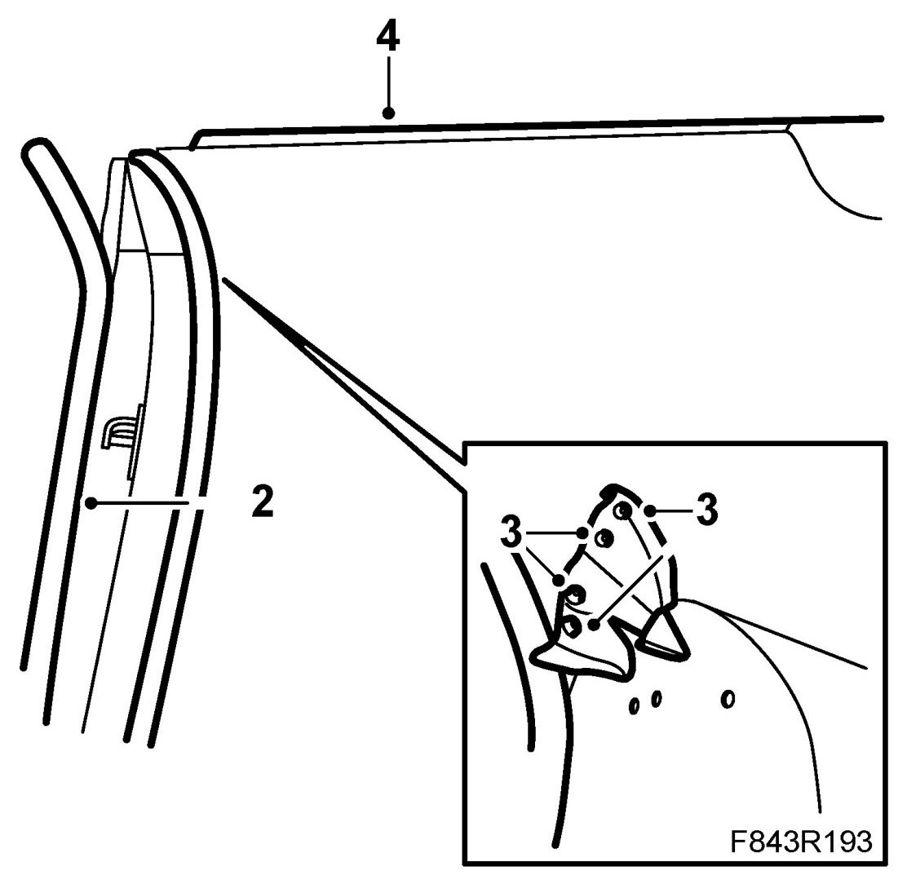

Outer Weatherstrip, Side Window and Weatherstrip, Soft Top Cover, CV
Outer Weatherstrip, Side Window And Weatherstrip, Soft Top Cover, CV
To remove
1. Completely retract the soft top and let the soft top cover remain up. Open the side windows fully.
2. Pull out the rubber plugs from the front section of the weatherstrip.

3. Lift the outer weatherstrip upwards and pull off the weatherstrip of the soft top cover. Continue to remove the weatherstrip from the other side by removing the rubber plugs and lift away the seal.
To fit
1. Check that the drainage hole by the rear wing is not blocked.

2. Locate the weatherstrip in position and push in the rubber plugs.

3. Continue to push in place the soft top cover seal onto the metal flange.
4. Continue to fit the weatherstrip on the other side. Ensure that the rubber catch is correctly located. Fit the plugs to the front section of the strip.
5. Check the fit of the moulding.
Cars with pinch protection: Carry out Programming the pinch protection.